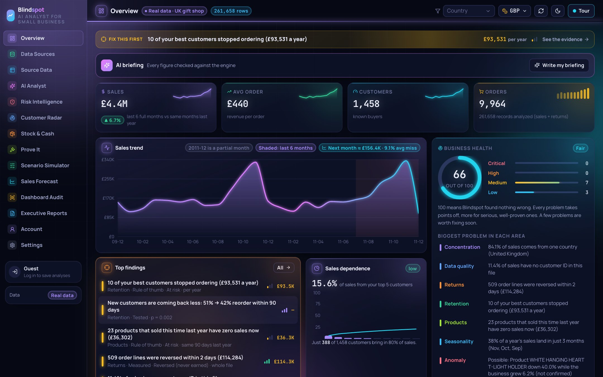
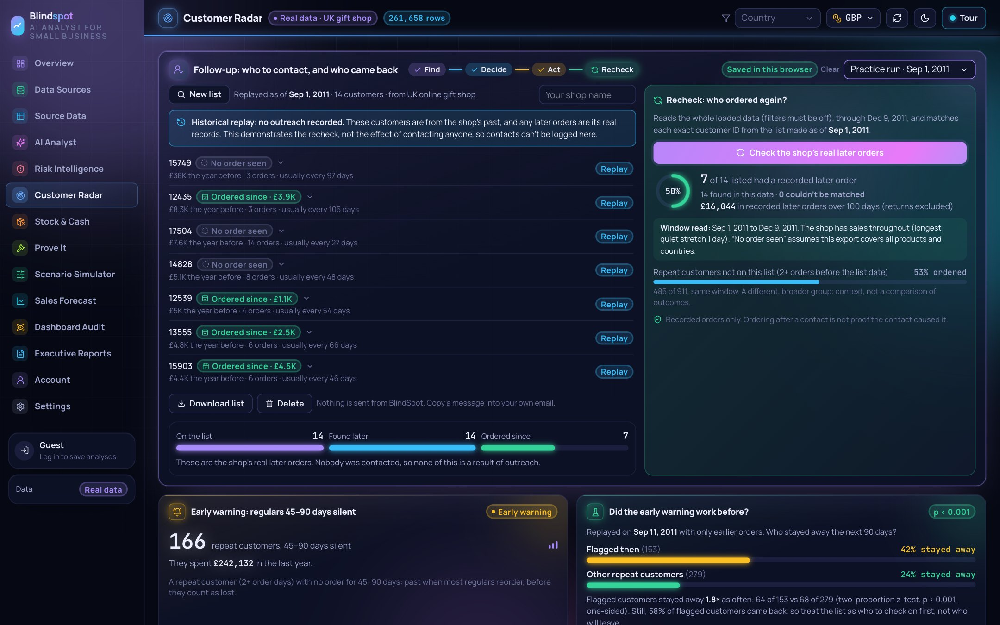
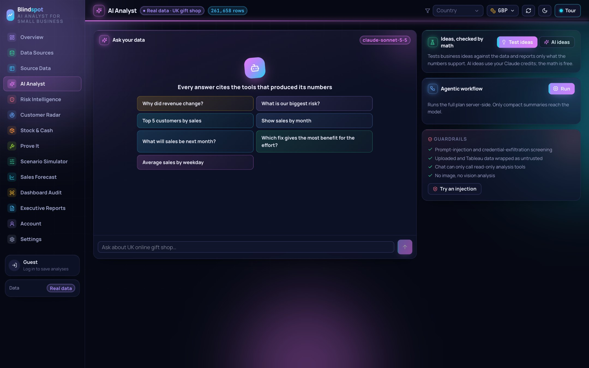
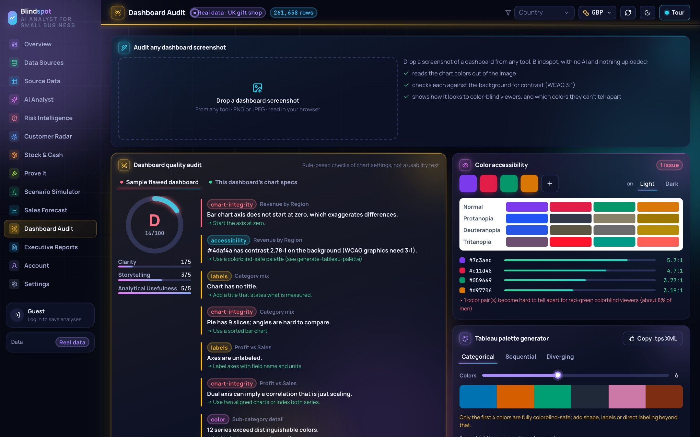

Any export, PDF or photo of a table
Duplicates, reversals, returns, fees
Statistics, exact rows, past replays
Contact, then recheck who came back
Health score, the fix-first problem, a checked AI briefing
Shopify, CSV, Excel, PDF, photo
Every row, and how it was cleaned
Ask in plain English, see the tools used
Problems ranked by money, labelled by certainty
Who is slipping, and the follow-up loop
Sales gaps that look like stock-outs
Did the promo really work?
What a fix could be worth
Next months, with its past accuracy
Misleading charts, color-blind checks
30/90/180-day plan, 30 currencies



User A can’t read, change or forge user B’s lists. Tested with throwaway users.
Shopify connects read-only. Keys never stored. Nothing is ever sent for you.
Try everything without an account; private sessions per visitor.
“Ordered after contact” is never called proof the contact worked.
Every AI number checked; every claim tagged with how sure it is.
VALIDATION.md and scripts let anyone reproduce the key numbers.